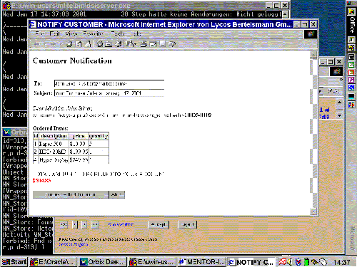
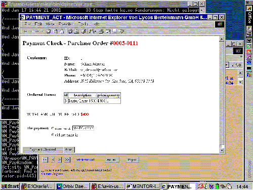

| Next Step |
Interactive Activities
The activity Notify notifies the customer by e-mail, indicating that her order is being processed.
 |
| (click on figure to enlarge) |

If the customer wants to pay by bill the mail order house has to check whether the payment has already been received. If the payment has already arrived the user enters the reception date and presses "Payment Checked!". She presses "Abort" if the payment is overdue.
 |
| (click on figure to enlarge) |

Again, all data flow between the activities and the workflow engine or the business object servers is handled via the XML mediator.
We can view the workflow execution with our monitoring tool ...
| Next Step |